前言
一直很想学Linux，但由于平时很忙，再加上我很讨厌背概念这种枯燥的学习，就一直没有开始。前段时间灵机一动，可以通过安装配置Arch Linux的过程来顺便学习，配置完成后还能作为主力系统使用
我准备在我的笔记本上安装，目前有一块500g的固态装了Windows，一块1T的固态作为资料盘，这次准备在不影响Windows的情况下，在1T固态中安装ArchLinux并和Windows共用资料分区
准备
确定电脑启动类型
电脑启动类型分为传统BIOS和UEFI。双系统推荐UEFI/GPT，不推荐BIOS/MBR，因为引导容易出问题。Win11只支持UEFI启动，如果是老设备，可能还是Legacy
按下Win+R，输入msinfo32后回车打开系统信息，查看BIOS模式是UEFI还是Legacy，后面的操作都基于UEFI进行

设置 Windows 时区偏移
Windows默认将硬件时钟当作本地时间，而Linux默认将硬件时钟当作UTC时间，这会导致双系统时间错乱。解决办法是在Windows里将硬件时间设置为UTC
管理员权限运行PowerShell，执行下面的命令
|
|
改完后可以确认一下，按 Win + R 输入 regedit 回车，进入下面的路径
|
|
右侧有下面的一行就是成功了，否则就是没生效
|
|

禁用快速启动和安全启动
Windows的快速启动本质是将关机改为休眠。如果双系统中的其一进入休眠状态，这时启动另一个系统，那么休眠系统中挂载的磁盘不能被挂载在另一个系统上，这样会导致文件系统错误。而如果 Windows 和 Linux 使用同一个 EFI 系统分区，可能导致NTFS分区处于未完全关闭状态，从而在Linux中挂载时报错甚至损坏数据，因此需要禁用快速启动
默认安装的Arch Linux没有配置安全启动，因此需要同时关闭Windows的这个模式。如果需要用到，那么可以在安装后进行额外配置
进入控制面板>系统和安全>电源选项>选择电源按钮的功能，点击更改当前不可用的设置，然后取消勾选启用快速启动，并将休眠关闭


注意：如果设备是笔记本，这里还需要在Windows设置>系统>电源和电池>屏幕、睡眠和休眠超时中将使我的设备在以下时间后休眠设置为从不，否则还是会自动休眠。不合上笔记本会导致系统卡死，合上后一段时间再开启会进入选择启动项的界面
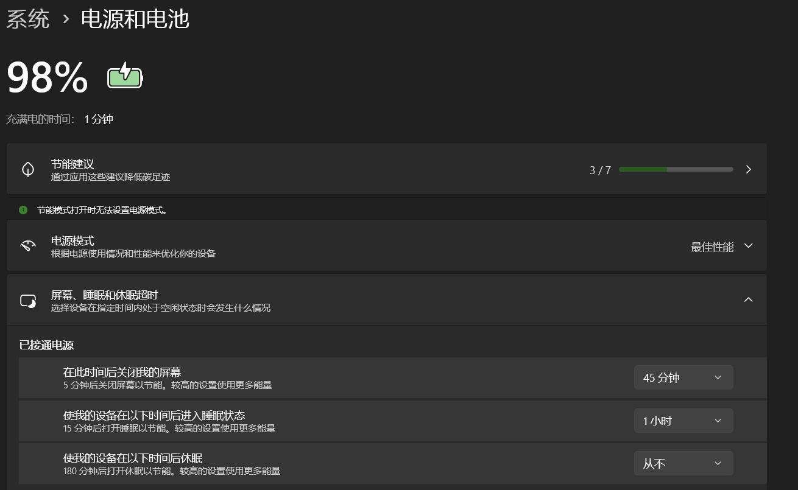
重启计算机，进入Bios，关闭安全启动(Secure Boot)，不同电脑方法不同。我的是开机时按F2进入Bios，点击更多设置，进入security，Secure Boot设置为Disabled，然后F10保存

制作启动U盘
-
准备一个4G以上的空U盘
-
下载Arch Linux的系统镜像X86_64版本
-
下载Ventoy的Windows版本
-
解压下载的Ventoy，运行
Ventoy2Disk.exe，在右上角配置选项中将分区类型改为GPT

- 选择U盘，点击安装，完成后将ArchLinux的镜像复制进U盘

准备空闲的磁盘空间
由于我的1T固态中只有一个分区，因此我选择从空闲空间中压缩一部分空间来安装 Arch Linux。如果有多个分区可以考虑转移资料并删除其中一个分区
我使用的是微PE系统中的DiskGenius。首先选中需要压缩的分区，然后右键菜单栏点击调整分区大小

弹出的界面里，将分区后部的空间设定为需要的大小，然后点击开始并确认警告，压缩卷就完成了
这里建议留出50g以上大小的空间，否则存储数据的空间很可能不足

启动与联网
进入Arch Linux安装介质
将刚刚制作的U盘插在电脑上，重启按F12进入选择启动项的界面，选择U盘

进入Ventoy界面，选择ArchLinux的镜像然后回车

看到这个界面说明是UEFI模式启动的，回车即可

如果是左上角有一个ArchLinux图标的界面，而且启动项的结尾是BIOS，说明是用传统BIOS启动的，没有启动到UEFI模式，需要关机重新设置
等待一会进入这个界面说明启动成功

连接网络与时间校准
安装ArchLinux需要全程联网，有三种常用的方式
- 直接插网线连接网络
- 如果电脑有无线网卡，可以通过 archiso 中的 iwd 连接 WiFi
- Android 手机给电脑 USB 共享网络
我这里使用的是iwctl连接WiFi，先进入iwctl
|
|
输入下面的命令查看无线网卡设备名，比如wlan0
|
|
扫描可用网络，并将可用网络列出来，wlan0需要替换成上一步自己的网卡设备名
|
|
这里遇到了报错，原因是网卡被rfkill禁用，是关闭状态
如果报错 No station on device: 'wlan0' ，可以检查 device 的 Powered 状态，如果是 off，需要Ctrl+c 退出 iwctl，再通过下面的命令将wlan0的电源打开
|
|
如果报错Operation not possible due to RF-kill，说明网卡被rfkill禁用。有些电脑会自动禁用无线网卡和蓝牙，输入以下命令解除
|
|

再重新进入 iwctl，连接 WiFi。device替换成电脑网卡的设备名，SSID替换成想连接的 WiFi 名，如果 WiFi 有密码，这里会提示输入密码
|
|
注意：shell不能识别中文，因此WiFi的名称和密码只能由字母数字和常见符号组成，名称中包含空格需要用双引号包裹。如果不符合命名规范，修改SSID后等待信息刷新，重新连接即可
连接后输入 exit 退出iwctl，测试是否成功联网，ping一下任意可直连的网址
|
|
如果已连接上网络，输出会像下图一样是一些延迟数据，否则就是没有连接成功或者网络不可用。按Ctrl+C终止

输入下面的命令开启时间同步
|
|
检查时间同步服务。NTP service显示为active状态说明服务正常运行，如果显示inactive，就是没有正常运行。正确的系统时间对于安装部分软件包是必须的
|
|

timedatectl的 NTP 同步依赖于网络。如果ping不通，这个服务即使显示active，时间也可能无法同步成功。建议检查一下System clock synchronized: yes
磁盘分区与挂载
这部分是整个安装过程中最麻烦最复杂的部分，一定要细心配置
查看磁盘信息
输入fdisk -l查看当前电脑磁盘的详细状态

或者输入lsblk，查看当前电脑磁盘的简要状态

/dev/sdX：代表通过 SATA / USB 接口连接的存储设备，可能是机械硬盘或 SATA 固态
/dev/nvme0n1：代表NVMe SSD
/dev/mmcblk0：代表eMMC 存储
以
/dev/nvme0n1p1中的数字为例：
nvme：设备类型0：第几个 NVMe 控制器n1： 该控制器下的第几个命名空间p1： 第几个分区
我即将分区的盘是/dev/nvme1n1，这里只会显示已分区的空间，所以看不到空闲空间
分区方案
安装 Linux 时，需要将磁盘划分为不同分区，用来存放系统启动文件和用户文件等。常见的分区方法包含启动分区、交换分区、根分区
首先确定根分区的格式，常见的格式有btrfs和ext4。btrfs 是一个现代化的文件系统，支持快照和自修复等高级功能，适合喜欢折腾的人。而 ext4 是一个稳定且性能优越的文件系统，适合追求稳定的人。我这里选用的是btrfs。
启动分区 /boot：
这是存放启动程序和内核文件的分区。在 UEFI 模式下，必须创建EFI 系统分区，通常挂载到 /boot，建议分配1G。在 BIOS 模式下，可以直接将启动文件存放在根分区中，通常不需要单独分区。如果是双系统安装，可以使用 Windows 的 EFI 分区，但 Windows 的 EFI 分区通常很小（100MB），可能不够用，并且 Windows 更新可能会修改 EFI 引导项，导致默认启动项被覆盖。因此更好的方法是为 Linux 创建单独的 EFI 分区
交换分区 /swap：
交换分区类似于 Linux 的虚拟内存，当物理内存不足时，系统会使用它来存储暂时不活跃的数据。如果物理内存充足，可能几乎用不到swap。这个分区不是必须的，交换文件也可以作为替代方案
根分区 /：
根分区用于存放操作系统及其所有文件。如果不单独划分 /home，用户数据也会存放在根分区。建议为根分区分配至少 20GB，根据需求和剩余空间进行调整
btrfs子卷：
由于我选择了 btrfs 作为根分区的格式，因此可以利用子卷这个功能来实现分区隔离。类似在根分区这个大分区中划出多个小分区。
与传统的物理分区不同，子卷是动态共享空间的。这样就不需要考虑给每个子卷分配多大空间的问题，只要硬盘有剩余空间，子卷都能自动使用。同时重装系统时只需格式化
@子卷，@home中的数据依然会被完整保留。
-
@： 这是挂载为根目录
/的子卷，用于存放操作系统文件。在 btrfs 架构中，一般将系统文件放在独立的@子卷中，系统崩溃时可以方便地进行快照还原，而不会影响到其他子卷。 -
@home： 这是挂载为
/home的子卷，用于存放个人数据、配置文件和下载内容，与系统文件分离，方便重装系统时保留个人文件 -
@swap (可选)：如果你没有划分独立的物理交换分区，也可以在 btrfs 分区内创建一个子卷来存放交换文件
推荐的分区方式
| 安装过程的挂载点 | 分区 | 分区类型 | 推荐大小 |
|---|---|---|---|
| /mnt/boot | /dev/efi_system_partition | EFI System | 1G |
| [SWAP] | /dev/swap_partition | Linux swap | 4G |
| /mnt | /dev/root_partition | Linux filesystem | 设备的所有剩余空间，至少20G |
分区操作
注意：不同电脑的磁盘和分区不一样，之后的操作需要以自己磁盘的情况为准，千万不要搞错磁盘设备名，否则很可能导致数据丢失
这里我准备分3个区，一个是1G的EFI分区，一个是4G的swap分区，一个是195G的根分区
由于我的Linux安装在磁盘的尾部空间，为了之后方便调整Linux根分区和Windows资料分区的大小，我让资料分区和根分区相邻，分区的顺序是根，swap，EFI
进入cfdisk
|
|
如果之前的步骤正确，这里可以看到绿色的Free space，这就是刚刚为Arch Linux预留的空间。通过方向键将光标移动到Free space和[New]，回车输入分区大小，再回车确认就建立成功了
建立全部分区以后，将光标移到刚建立的分区和[Type]，将分区类型改成上面表格对应的类型

将光标移到[Write]，输入yes，确认写入分区表
然后选中Quit，退出cfdisk，最后输入lsblk命令检查一下分区

格式化
格式化根分区为btrfs
|
|
初始化swap分区：
|
|
格式化EFI分区，建议格式化为fat32格式：
|
|

创建Btrfs子卷
将根分区挂载到/mnt
|
|
创建@子卷作为根目录
|
|
创建@home子卷作为家目录
|
|
创建@swap子卷作为swap目录
如果使用swap分区，则不需要@swap子卷 如果使用swap文件，则需要创建@swap子卷并在其中创建swapfile
|
|
检查子卷创建的情况
|
|
卸载分区，为了在下一步将/mnt指向子卷
|
|
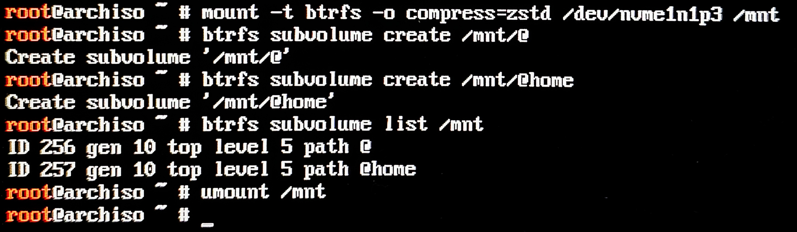
挂载
在Live USB安装环境中，内存系统已经有了一个自己的根目录
/。如果直接把硬盘分区挂载到/，会覆盖掉安装环境正在运行的文件，导致系统崩溃。因此安装环境提供了一个名为
/mnt的空目录作为临时挂载点，用于在安装过程中挂载新系统的分区。所以挂载时的目录前都会有/mnt，而当安装完成进入新系统的时候，这个目录就会消失
注意：挂载分区一定要遵循顺序，先挂载根分区到 /mnt，再挂载其他分区。否则可能遇到安装完成后无法启动系统的问题
挂载根目录
|
|
创建/boot目录并挂载EFI分区
|
|
挂载家目录
|
|
挂载swap子卷(可选)
|
|
启用swap分区
|
|
输入lsblk命检查磁盘分区情况，可以看到每个分区后面出现了挂载的目录

如果发现挂载目录错误，可以卸载后重新挂载，如卸载mnt/boot的命令是
|
|
系统安装
禁用Reflector
Reflector是一个自动更新镜像源的工具。禁用是因为它会自动运行并覆盖手动设置好的高速服务器。它筛选出的服务器虽然下载速度快，但都在国外，由于大陆的网络环境，连接经常不稳定，导致安装过程出现报错或卡顿
禁用服务
|
|
复查，可以看到Active:inactive(dead)
|
|

更换源
编辑mirrorlist文件
|
|
按i进行编辑，在文件第一行插入清华源
Pacman 会从上到下尝试，第一行成功后就不会再找后面的
这里我首先参考教程换了cernet源，但下载时会报错找不到文件，而且速度极慢，说明至少在我的环境中，这个源不可用，因此我最后改成了清华源
|
|
Esc退出编辑模式，:wq保存退出。

安装软件包
| 名称 | 作用 | 备注 |
|---|---|---|
| base | 系统的最基础组件 | 包含最核心的工具，不含内核 |
| base-devel | 开发工具包 | 包含 gcc, make 等，AUR 编译必装 |
| linux | Linux 内核 | 主线内核 |
| linux-zen | Linux 内核 | 偏向性能优化 |
| linux-lts | Linux 内核 | 提供长期支持版本 |
| linux-firmware | 硬件固件驱动 | 包含显卡、声卡、网卡等驱动 |
| nano / vim | 文本编辑器 | 进入新系统后修改配置文件的唯一手段 |
| networkmanager | 网络管理服务 | 自动处理 WiFi 和有线连接 |
| btrfs-progs | Btrfs 文件系统工具 | Btrfs必装的工具 |
| intel-ucode | Intel CPU 微代码更新 | 提升 CPU 稳定性和安全性（AMD 用户换成 amd-ucode） |
| ntfs-3g | NTFS 读写支持 | 方便在 Arch 中读写 Windows 资料盘 |
| bash-completion | 命令行自动补全 | 提高敲命令的效率 |
linux内核可以安装多个，如果某一个内核崩溃可以随时切换
输入下面的命令进行安装，pacstrap是用于将基础系统安装到目标目录的工具，底层调用pacman，可以自动完成配置
|
|

生成挂载表
fstab是 Linux 的磁盘挂载表。它告诉系统在开机时，应该如何对应硬盘的不同分区挂载的目录
使用 -U 参数生成 UUID（通用唯一识别码 ）。相比传统的 /dev/sdX 命名，UUID即使插拔硬盘导致盘符变化，系统依然能准确找到启动盘
|
|
执行之后，一定要检查 /mnt/etc/fstab。Btrfs 的子卷挂载在 fstab 里，如果没写对，重启后系统会挂载物理分区的根，导致找不到 /home 里的数据
|
|
这里由于使用了子卷和压缩，生成的 fstab 中会自动包含 subvol=@ 和 compress=zstd 等参数

至此基本的安装就完成了
系统基本配置
输入下面的命令进入安装好的系统环境，提示符由 root@archiso ~ # 变为 [root@archiso /]#
|
|
arch-chroot能将当前的操作环境从启动 U 盘临时切换到硬盘上刚装好的新系统中。执行后，在终端输入的命令将直接作用于硬盘系统，而不再影响 U 盘环境。利用它的特性可以在系统挂掉的时候进入U盘环境进行修复
用户与权限
目前登陆的用户是root，设置该用户的密码
|
|
输入的密码不会显示，需要输入两次
archLinux是多用户系统，root用户拥有最高权限，甚至可以rm -rf /*删除系统本身，因此需要创建一个普通用户，以防不小心执行错误的命令
|
|
设置密码
|
|

需要修改wheel的权限设置来让普通用户能获取临时 root 权限，打开sudoers文件
普通用户通过在命令前加sudo，回车后输入密码来获得临时root权限
|
|
找到下面的两行，将wheel取消注释。去掉#，但务必保留%
|
|

然后Esc退出编辑模式，:wq保存退出
这里如果报错，可以尝试
:q!不保存退出，然后用visudo命令来编辑
为电脑设置主机名，注意名字不能包含空格和特殊符号
|
|
配置Hosts文件
可选，但如果不配置这一步，可能会在网络变更时出现应用无法启动等问题
打开hosts文件
|
|
将文件写成下面的格式，如果系统有一个永久的 IP 地址，应该使用这个IP地址而不是 127.0.1.1
|
|

按 Esc，输入 :wq 保存退出
本地化与时区
编辑locale.gen文件
|
|
将下面几项的注释删除
|
|
让系统生成这些语言环境的数据
|
|
修改locale.conf来设置系统默认语言为英文
locale.conf是全局设置，设置成英文是为了避免部分程序或终端在中文环境下显示异常，且系统的日志会用英文显示，更容易排查问题。LANG的值必须是上一步已经设置过的值
|
|

设置系统时区为亚洲上海，并把当前系统时间写入硬件时钟
|
|
安装引导程序
这是启动系统前的最后一步，必须正确安装好引导加载程序后再重启，否则将无法正常进入 Arch Linux 系统
基本配置
|
|
-
grub：引导程序 -
efibootmgr：管理UEFI启动项 -
os-prober：探测硬盘上存在的其它系统启动项，比如Windows Boot Manager
调用 GRUB 的安装工具，把引导文件写到磁盘，指定目标平台64位 UEFI 固件，指定EFI分区的挂载点并设置启动项名字
|
|
编辑
/etc/default/grub：
将grub的语言设置为英文：
在文件顶端添加一行LANG=C，这是为了防止只有一部分有翻译，显示混乱的情况
让grub记住上次选择的选项：
将GRUB_DEFAULT改为saved，GRUB_SAVEDEFAULT=true取消注释
增加内核日志的项目和数量：
GRUB_CMDLINE_LINUX_DEFAULT中，去掉quiet，并且把loglevel提高到5，这是为了出现问题的时候更加便于排查
启用os-prober：
Arch 默认是关闭 os-prober 的。将GRUB_DISABLE_OS_PROBER=false取消注释，这是为了探测硬盘上的Windows启动项

把os-prober中的位置提前，使引导界面中Windows排在第一位，Linux排在第二位，这里数字越小显示越靠前
|
|

生成grub配置文件，输出的Found后面就是系统，这里可以检查一下是否包含Linux
|
|

到了这一步ArchLinux就安装成功了，首先退出chroot，卸载/mnt分区，reboot重启
|
|
检查启动项情况。如果前面的步骤没有出错，启动项选择界面可以看到有Windows和Linux，可以自主选择进入哪个系统，并且均运行正常，这种情况可以跳过下一步直接来到后续
os-prober 未检测到 Windows的解决方法
经过刚刚的设置后，引导选择界面应该有4个选项，Arch Linux、Advanced options for Arch Linux、UEFI Firmware Settings、Windows，如果没有：

- 确保
/etc/default/grub中GRUB_DISABLE_OS_PROBER未设置为true，并重新生成配置 - 安装
ntfs-3g：pacman -S ntfs-3g - 重新生成：
grub-mkconfig -o /boot/grub/grub.cfg
如果依旧没有作用，按照下面的步骤配置：
注意：此步骤修改的是grub的配置文件，修改后重新生成配置会导致修改被覆盖
查看Windows的EFI分区信息，nvme0n1p1替换为自己电脑efi分区的盘符，记住这里的UUID。这个是Windows启动分区的UUID
|
|

打开配置文件
|
|
找到下面两行内容
|
|

在这两行中间加入下面的代码并保存
|
|

重启后Windows启动项就被添加到引导界面了
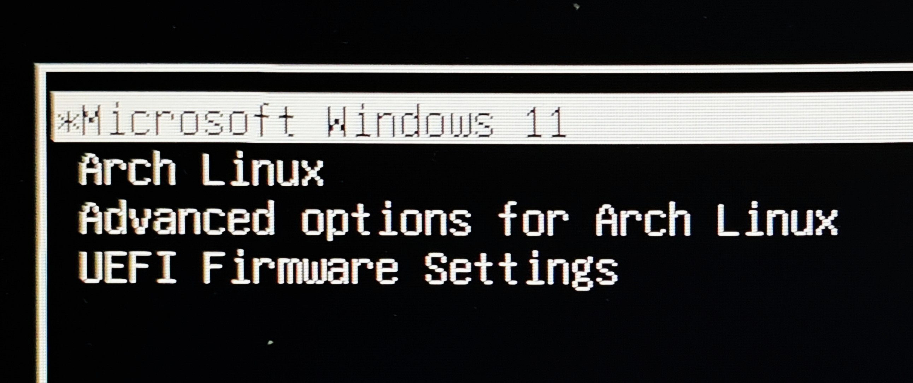
后续
启动后先进行登录，可以看一下版本信息
|
|
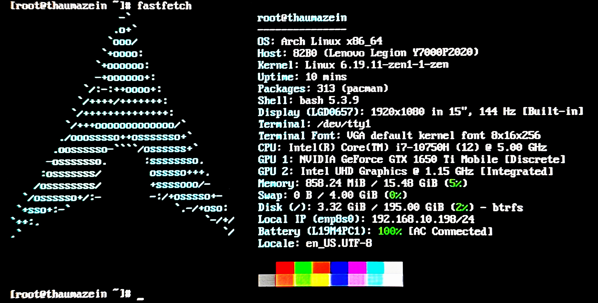
联网
开启联网服务，并设为开机自启
|
|
扫描可用网络然后列出来
|
|
输入下面的命令连接网络，SSID 需要替换成想连接的 WiFi 名，passwd 需要替换成WiFi密码
|
|
连接好后用ping命令测试网络

安装NetworkManager 图形化管理工具
|
|
DNS服务配置
NetworkManager 负责管理网络连接，但它的 DNS 处理方式比较基础，在复杂的网络环境下，容易出现 DNS 配置被覆盖或解析不稳定的问题。为了解决这个问题，可以使用 systemd-resolved 接管 DNS 解析服务。它会在本地提供统一的 DNS 入口，并负责缓存与转发解析请求
启用服务
|
|
将系统 DNS 入口切换为 systemd-resolved 提供的 stub 接口
|
|
检查是否生效
|
|
如果输出类似下图，说明 DNS 解析已由 systemd-resolved 统一接管
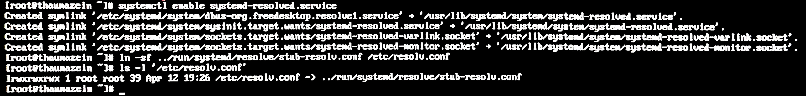
添加软件源
pacman 默认只使用官方仓库，如果需要使用第三方仓库就要手动添加
编辑pacman.conf文件
|
|
在文件末尾添加下面的内容，加入archlinuxcn仓库
|
|
取消这两行前面的注释，启用 multilib 仓库用于兼容 32 位程序
|
|
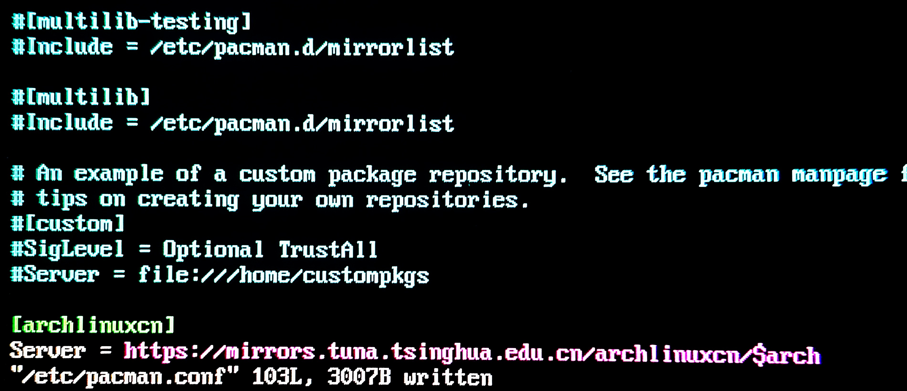
更新软件包并导入仓库签名密钥。keyring 的作用是建立对该仓库软件包的信任，否则 pacman 会因签名验证失败而拒绝安装
|
|
安装 yay
yay 是一个常用的 AUR 辅助工具，用于自动构建并安装社区仓库中的软件
|
|
安装成功后进行测试
使用 yay 时不要使用 sudo，因为 AUR 构建过程会在本地生成文件，使用 root 权限会导致文件归属异常，导致后续产生一系列错误
|
|
显卡驱动
如果是Nvidia显卡，建议在进入桌面环境前安装好显卡驱动
安装头文件
安装驱动之前需要更新系统来避免依赖冲突
|
|
注意：如果内核更新了，建议重启后再进行驱动安装，或者确保安装了与当前内核版本匹配的头文件
首先安装内核对应的头文件linux-headers linux-lts-headers linux-zen-headers。只需要安装已有内核的对应头文件，不是必须全部安装
|
|
Optimus模式
Optimus 是一种双显卡切换架构，常见于笔记本电脑中，用来同时集成核显和独显。日常轻负载使用核显降低功耗，运行游戏或图形计算时切换到独显提升性能
检查
|
|
这里可以看到两行输出，分别是Intel的核显和Nvidia的独显，说明我的电脑是Optimus模式
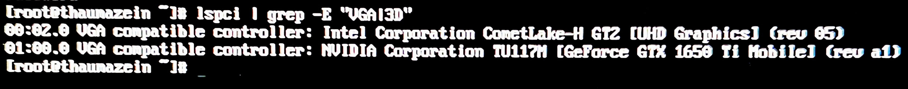
确定驱动包
由于驱动包更新较快，这里不建议照抄任何教程。进入NVIDIA - ArchWiki，首先找到这个表格
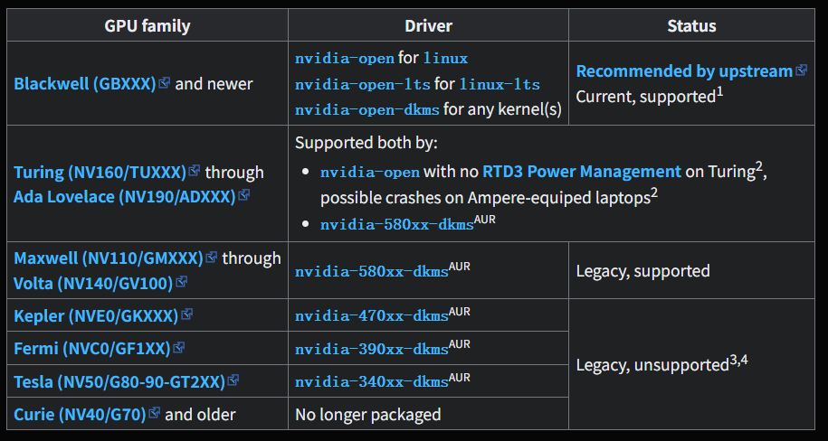
在左侧的GPU family部分随便点击一个代号是NV开头的，来到freedesktop界面，Ctrl+f输入自己显卡的型号进行搜索，找到属于的大类，然后返回上个界面对照表格找到对应的驱动。比如我的1650Ti对应的是nvidia-open和nvidia-580xx-dkms
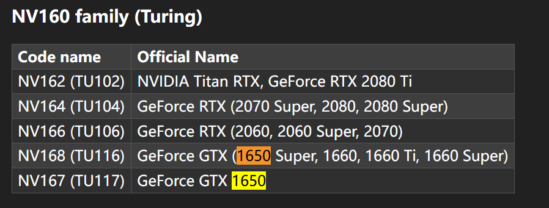
安装驱动
这里一共需要安装4个包：
- 基础驱动：由上一步确认，如果出现多个驱动的情况，根据自己内核选择对应的驱动。
dkms比较全面，可以适配更多内核，open比较不稳定，不建议优先选择 nvidia-settings：图形化驱动配置工具nvidia-utils：驱动运行时依赖lib32-nvidia-utils：32位支持nvidia-prime：用于在Optimus环境下切换独显与核显，提供prime-run命令，使程序可以按需调用 NVIDIA 独显运行，而不是默认使用核显
注意：如果基础驱动包含版本号，如
nvidia-580xx-dkms，那么nvidia-settings和nvidia-utils中间也必须加上版本号，如nvidia-580xx-utils，版本号以ArchWiki为准
安装的驱动必须版本一致，不能混用官方仓库与 AUR 版本，也就是说假如第一次安装使用的是AUR，之后更新也需要继续使用
|
|
完成后reboot重启，然后检查是否安装成功
|
|
若输出类似以下内容，说明驱动安装成功
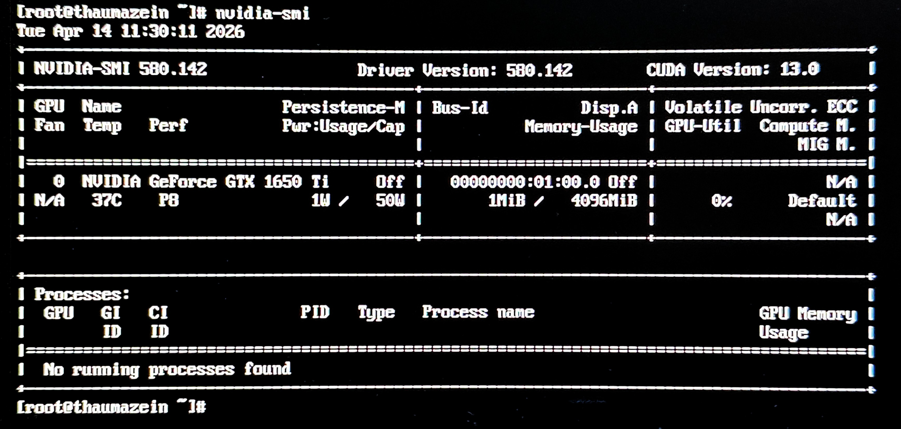
安装GUI
明明安装好了系统，可还是需要命令行操作？其实是因为Arch Linux的系统与桌面是分开的，桌面环境需要单独安装。如果想要图形化的桌面环境，就需要设置显示服务器、显示管理器与桌面环境
安装X.Org作为显示服务器
|
|
关于桌面环境，主流的有两个， GNOME 和 KDE Plasma。GNOME 更简洁统一，不需要怎么折腾就可以使用，接近 macOS 的体验，KDE Plasma 定制自由度高，逻辑类似 Windows，但默认配置不是很好用，需要一定的自定义才能使用。我这里选择了KDE
安装 SDDM 显示管理器、KDE Plasma 桌面环境以及基础 KDE 组件
plasma：KDE 桌面环境本体，提供桌面、任务栏、窗口管理等完整图形界面sddm：登录管理器，负责开机后的登录界面和用户选择konsole：终端工具，用于执行命令行操作dolphin：文件管理器，用于浏览、复制、删除文件ark：压缩文件管理工具，支持解压和打包 zip、tar、7z 等格式gwenview：图片查看器，用于浏览和简单编辑图片kate：文本编辑器，适合编写代码或修改配置文件，支持语法高亮和插件扩展
|
|
设置 SDDM 开机自启
这一步会导致下次开机直接进入图形化界面，执行前请务必确认显卡驱动没有问题，以防出现显示不正常等故障
|
|
重启后进入桌面环境，Arch Linux的基础安装就顺利完成了
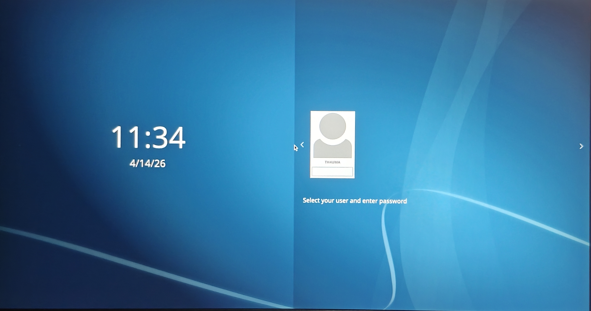
Linux常用命令
| 常用操作与管理 | 系统信息与网络 |
|---|---|
| 文件与目录操作 | 系统信息 |
ls：列出目录内容 |
uname -a：查看系统信息 |
cd 目录：切换工作目录 |
df -h：查看磁盘空间 |
pwd：显示当前路径 |
du -sh 目录：查看目录占用大小 |
cp 源 目标：复制/目录 |
lsblk：查看磁盘和分区 |
mv 源 目标：移动/重命名 |
文件内容与搜索 |
rm 文件：删除文件/目录 |
grep 关键词 文件：搜索文本内容 |
mkdir 目录名：创建目录 |
find 路径 条件：查找文件 |
rmdir 目录名：删除空目录 |
which 命令：查找命令路径 |
| 软件包管理 | 压缩与解压 |
pacman -S 包名：安装软件 |
tar -xvf 文件.tar：解包 |
pacman -Syu：更新系统 |
tar -cvf 文件.tar：打包 |
pacman -Rns 包名：卸载软件 |
gzip 文件：压缩文件 |
pacman -Ss 关键词：搜索软件 |
gunzip 文件.gz：解压 |
| 进程管理 | 服务管理 |
ps：查看进程 |
systemctl status 服务：查看状态 |
top：实时查看进程/资源 |
systemctl start 服务：启动服务 |
kill PID：结束进程 |
systemctl enable 服务：开机自启 |
free -h：查看内存使用 |
网络相关 |
ip a：查看网络信息 |
参考
Windows+Arch Linux双系统基本安装 - 团子的血域城堡
【超简单】Windows+Arch Linux双系统双磁盘方案，全程不废话_哔哩哔哩_bilibili
Arch Linux 中的 os-prober：深度解析与实践指南 — geek-blogs.com
「Archlinux究极指南2025」从手动安装到显卡直通，最后删除Linux_哔哩哔哩_bilibili
archlinux + kde6 安装美化（持续更新） - 光头就不会掉头发了吧 - 博客园
在 Arch Linux 上安装 NVIDIA 显卡驱动的完整指南与常见问题解决方案 - 云原生实践